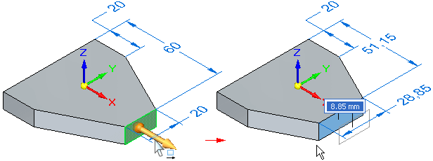
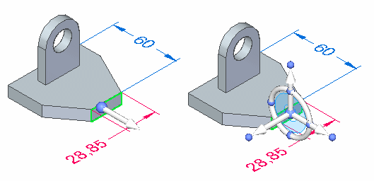

steering wheel
A graphical tool or handle that you can use to manipulate model geometry. You can use the steering wheel to move and rotate faces, features, reference planes, and sketches. You display the steering wheel by selecting the geometry you want to modify using the Select tool.

The steering wheel is often displayed progressively. For example, if you select a single model face, only the primary axis and origin of the steering wheel is displayed.

To display the full steering wheel, you can click the origin knob.
